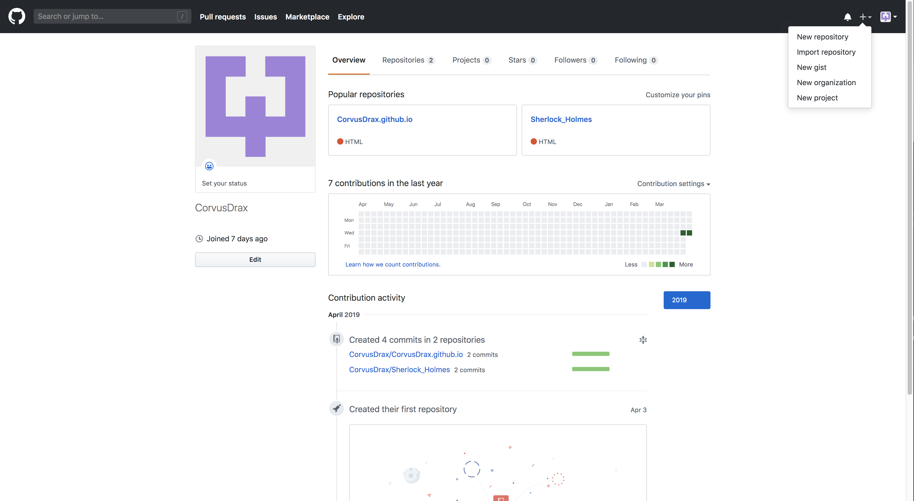
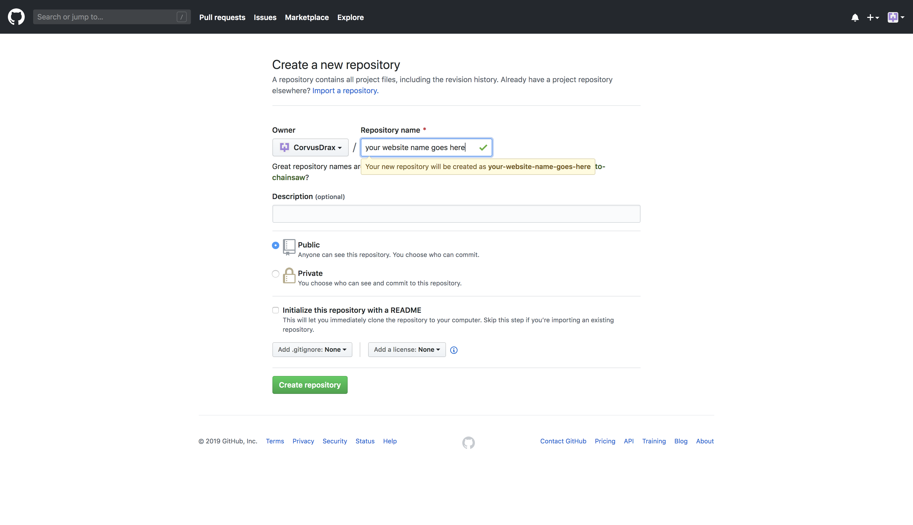
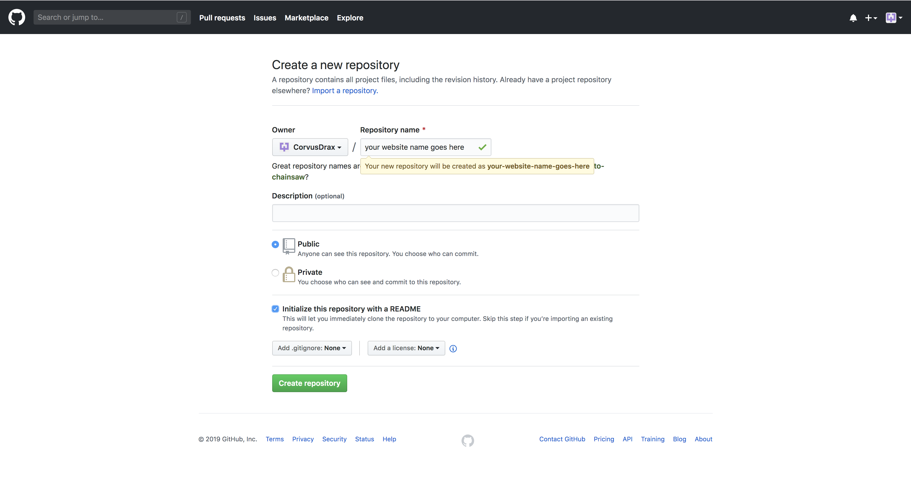
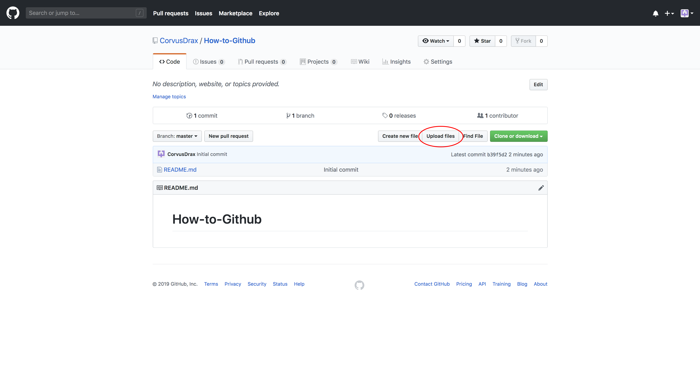
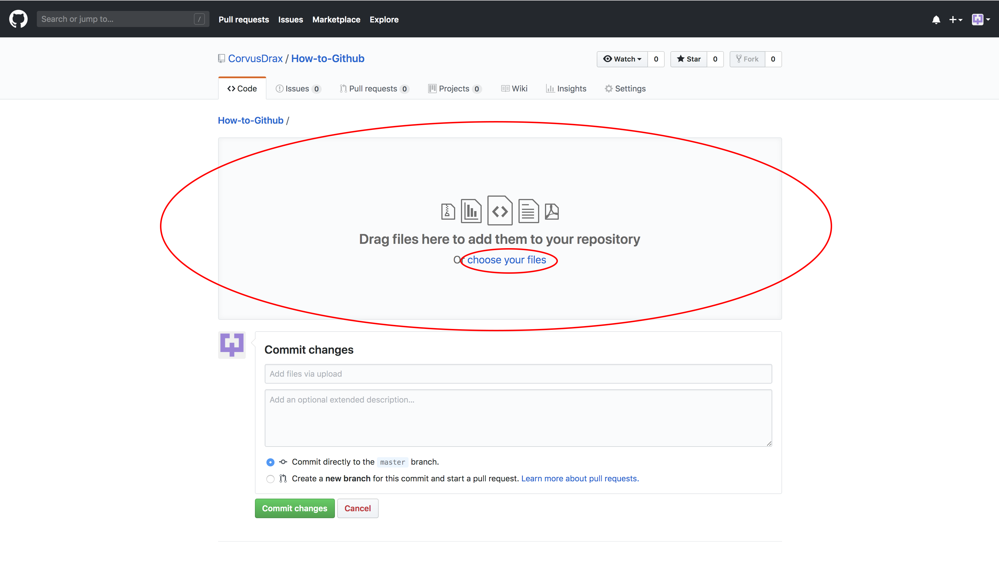
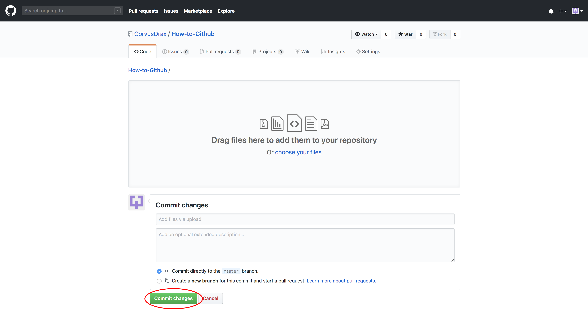
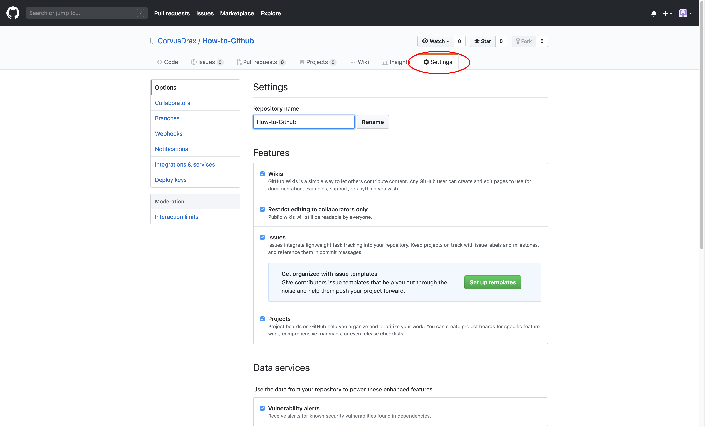
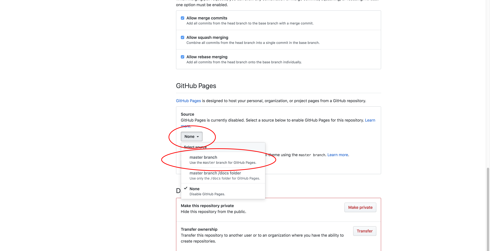
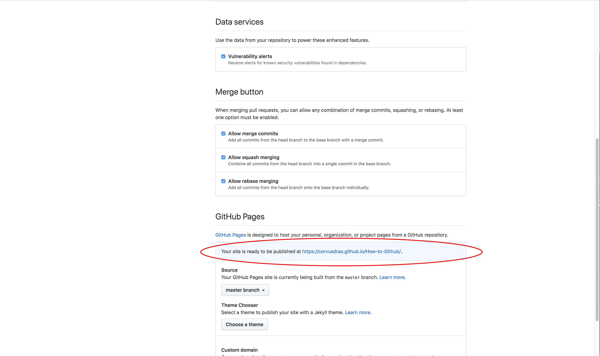

This button can be found at the top right of the page. Also note that the default is for a page to be publicly published, so make sure to check the private if you dont want anyone to acess it.
This action is found in the center of the page.
This checkbox can be found in the center near the bottom of the creation text, after that click create repository
This button can be found just to the left of the bright green clone or download button
Either select all files you wih to upload and drag them into the drag and drop box, or select the blue "choose your files" text and select your files that way.
Select the bright green commit changes button at the bottom of the page.
Go to the settings section, located at the top of the page
Scroll down to the GitHub Pages section, and click the button that currently desplays the word none, then choose the option that says master branch.
Your web page url should now be desplayed under GitHub Pages
